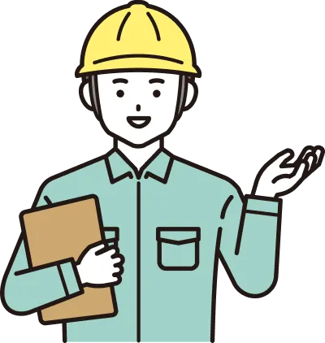

JOBJINの解体工事 2つの特徴
安心して任せられる 優良解体業者をご紹介
JOBJIN独自の選定基準で工事会社を評価
主な評価項目

お付き合いのある数百の解体業者の中から、
お客様の要望に沿ったベストな1社をご紹介します。
万が一に備えた 解体工事に対する保証が充実
保証1
解体業者とのトラブルに対する保証
完工保証

解体業者が万が一完工できなくなった場合は、JOBJINが代わりの業者を選定し工事を完工いたします。
差額保証

解体業者の変更によって工事費用に差額が生じた場合は、JOBJINが差額を保証いたします。
着手金保証

着手金の支払い後に、解体業者が倒産などで工事を履行できなかった場合、その代金をJOBJINが保証いたします。
保証2
近隣とのトラブルに対する保証
JOBJINが紹介する解体業者は、もれなく損害賠償責任保険に加入
しているため、近隣トラブルの保証も万全です。
保証対象となる近隣トラブルの例

誤って近隣の建物を
壊してしまった

工事が原因で地盤が
緩んで隣の家が傾いた

工事の振動で近隣建物
の壁に亀裂が発生した

工事の振動で土砂崩れ
が発生した

誤って隣の家との共有
物を解体してしまった

その他解体工事が原因
で近隣に被害が出た
業界初の新サービス JOBJINなら 解体費用が他社よりも安くなります！
JOBJINは仲介手数料が 完全に無料 だから 解体費用が安くなる！


仲介手数料を
甘く考えていませんか？
見積もりサイトやハウスメーカーの仲介手数料は、
なんと解体費用の10%～30% !
解体費用が100万円なら、 10万円～30万円
解体費用が300万円なら、 30万円～90万円
が、仲介手数料としてかかる計算です。

JOBJINは
リサイクルで収益化
だから
仲介手数料が無料！
他社は仲介手数料で収益を得ていますが、JOBJINは解体から出る廃材を集めることで収益をあげています。そのため手数料無料にして廃材をより多く集める取り組みを行っています。
JOBJINの仕組み
解体工事で出る廃材
リサイクルで収益化！
JOBJINは廃材処理を行う、創業70年のリサイクル企業です。
より多くの廃材を集めるために
手数料無料で運営